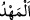

kavimlerin hallerinin ilmi, Allah’tan başka kimsenin bilmediği gaybî haberlerdendir.
Onların durumlarını bilmekle peygamberlik makamı arasında bir bilgi yoktur. Onlardan
ben ancak gönderilmiş olduğum risâletle ilgili olarak Rabbimin öğrettiklerini bilirim.
Bu bilgiler bir kitapta, yani levh-i mahfuzda tafsîlatlı olarak sâbittir.
“Rabbim ne yanılır, ne de unutur” dedi.” “__WORD__ (yanılma)”, bir şeyin yeri
konusunda hatâ edip ona ulaşamamak demektir. “__WORD__ ise hatırına gelmeyecek kadar
bir şeyi unutmak demektir. Bunların her ikisi de bizzat âlim olan Allah için imkânsızdır.
Yâni Allah başlangıçta hatâ etmez, her şeyi bilir, sonra da onlardan gâfil olmaz, bu
bilgiler dâimâ sâbittir. Bu âyet, her şeyin ilminin levh-i mahfuzda yazılı olmasının
Allâh’ın başlangıçta ve ebedî olarak o bilgilere muhtaç olmadığını açıklamak içindir.
Kâinâtla ilgili bütün hükümlerin bir kitapta yazılması, melekler onlara muttali olsun ve
bu sâyede Allah Teâlâ’nın ilminin hata ve unutmadan münezzeh olduğuna istidlalleri
artsın, diyedir.
O’na bir zerrenin ilmi örtülü değildir
Ki açık da gizli de O’nun yanında birdir
Bu kesin cevaptan sonra Mûsâ (a.s.) Allah Teâlâ’nın işlerini açıklamaya başlamış ve
şöyle demiştir:
53. O, yeri size beşik yapan ve onda size yollar açan, gökten de su indirendir.
Onunla biz çeşitli bitkilerden çiftler çıkardık.
“O, yeri size beşik yapan.” İmam Râğıb şöyle der: “__WORD__, çocuk için hazırlanmış yer
demektir. “__WORD__ ve “__WORD__ hazırlanmış, düz ve yayılmış yer demektir.”
Kâşifî şöyle der: “Üzerine oturasınız ve mesken yapasınız diye Cenâb-ı Hak
yeryüzünü güzelce döşemiş ve yaymıştır.”
“Ve onda size yollar açan,” Yâni Allah başkası için değil, sırf sizin için birçok
yollar yapmış, bunları dağların, vâdîlerin, çöllerin arasına yerleştirmiştir. İşlerinizi
görmek ve istifâde etmek üzere bir yerden bir yere gitmek için bu yolları kullanırsınız.
“Gökten de” buluttan da “su” yağmur “indirendir.” Su, yeryüzünün etrafını kuşatan,
akışkan cisimdir. Burada geçen “su”dan maksad yağmurdur. Yağmur; bir araya gelmiş su
parçacıklarıdır. Bu kelimenin âyette nekra (belirsiz) geçmesinin sebebi, indirilen
yağmurun yağmurlardan bir bölüm olup tamamı olmamasıdır.
“Onunla” o su sebebiyle “biz çeşitli bitkilerden çiftler çıkardık.” bitirdik.
Âyette “su” kelimesi zikredildikten sonra üçüncü şahıs sıygasından vazgeçilip birinci
şahıs sıygasıyla Allâh’ın kelâmı hikâye edilmeye başlandı. Bunun sebebi